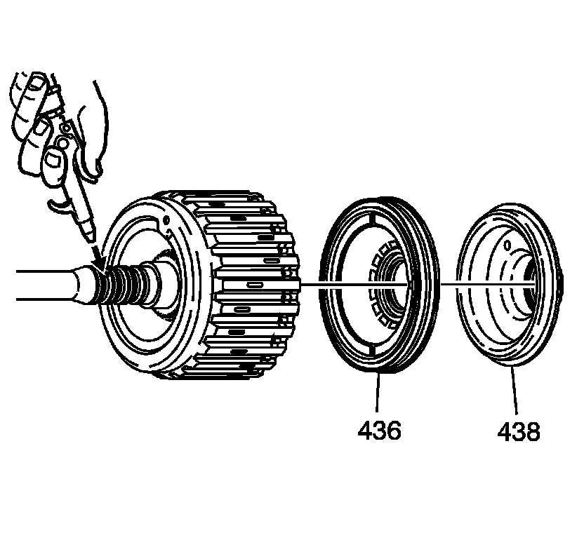
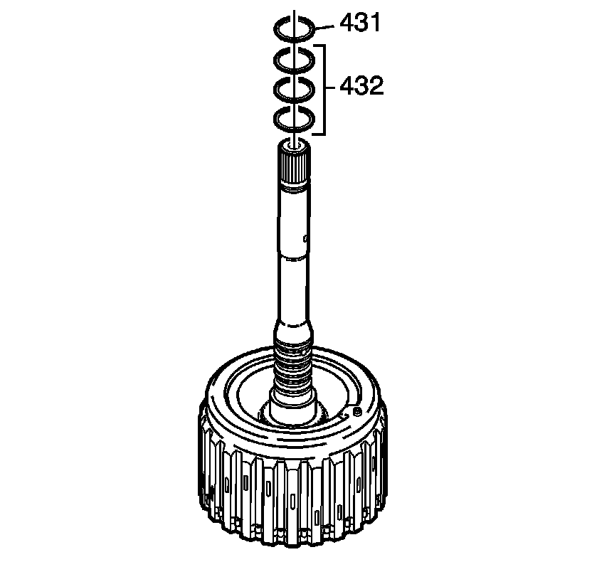

Forward and Coast Clutch Disassemble
Forward and Coast Clutch Disassemble
Tools Required
J 43074 Forward Clutch Piston Spring Compressor

1. Remove the forward clutch backing plate retainer ring (451).
2. Remove the forward clutch backing plate (450).
3. Remove the forward clutch plates (448, 449). Refer to Clutch Plate Selection Specifications (Clutch Plate Selection Specifications) .
4. Remove the forward apply plate (447).

5. Remove the coast clutch housing (446).
6. Remove the coast backing plate (445).
7. Remove the coast clutch plates (443, 444). Refer to Clutch Plate Selection Specifications (Clutch Plate Selection Specifications) .
8. Remove the caost apply plate (442).
9. Remove the coast clutch spacer plate (441).

10. Use the J 43074 to compress the forward and coast clutch spring (439).
11. Remove the retainer ring (440).
12. Remove J 43074 .
13. Remove the clutch spring (439).

Important: It may be necessary to apply air pressure to remove the piston.
14. Remove the coast clutch piston (438).
15. Remove the forward clutch piston (436).

16. Remove the input shaft fluid seal (431).
17. Remove the input shaft fluid seals (432).